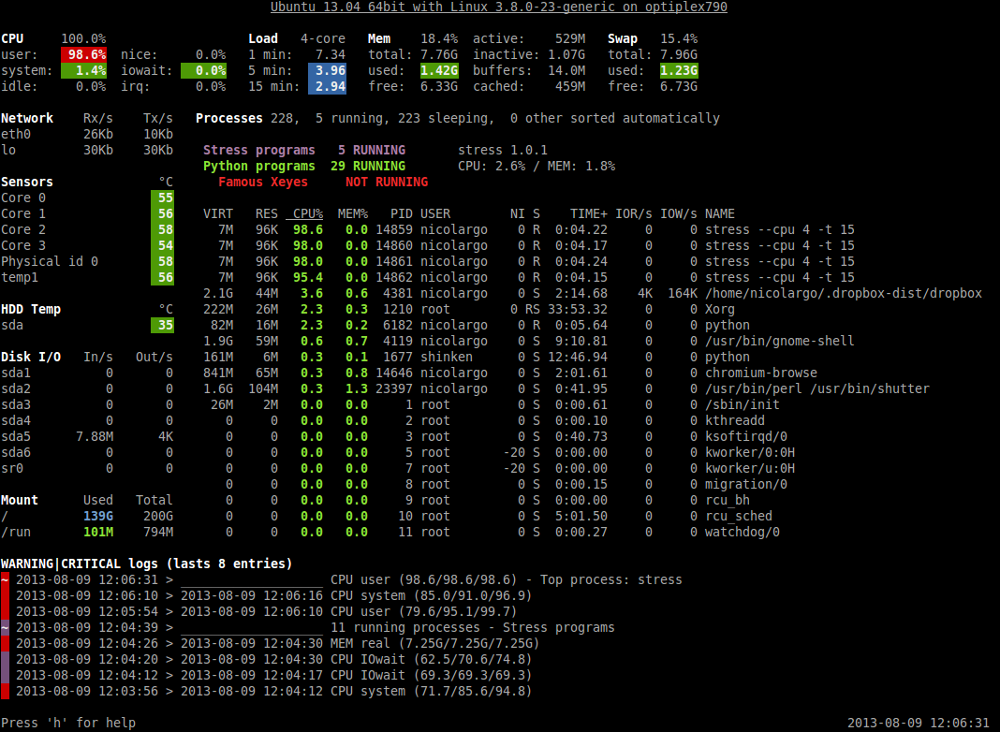
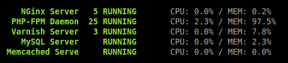
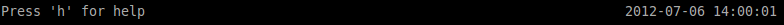
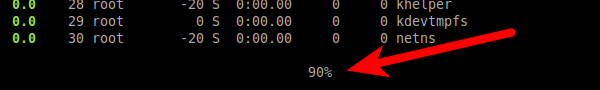

Glances¶
This manual describes Glances version 1.7.1.
Copyright © 2012-2013 Nicolas Hennion <nicolas@nicolargo.com>
August 2013
Table of Contents
Introduction¶
Glances is a cross-platform curses-based monitoring tool which aims to present a maximum of information in a minimum of space, ideally to fit in a classical 80x24 terminal or higher to have additional information.
Glances can adapt dynamically the displayed information depending on the terminal size. It can also work in a client/server mode for remote monitoring.
Glances is written in Python and uses the psutil library to get information from your system.
Console (80x24)

Full view (>80x24)
Usage¶
Client/Server mode¶
If you want to remotely monitor a machine, called server, from another one, called client, just run on the server:
server$ glances -s
and on the client:
client$ glances -c @server
where @server is the IP address or hostname of the server.
In server mode, you can set the bind address -B ADDRESS and listening TCP port -p PORT.
In client mode, you can set the TCP port of the server -p PORT.
Default binding address is 0.0.0.0 (Glances will listen on all the network interfaces) and TCP port is 61209.
In client/server mode, limits are set by the server side.
You can also set a password to access to the server -P password.
Glances is IPv6 compatible. Just use the -B :: option to bind to all IPv6 addresses.
Command reference¶
Command-line options¶
| -b | Display network rate in Byte per second (default: bit per second) |
| -B IP | Bind server to the given IPv4/IPv6 address or hostname |
| -c IP | Connect to a Glances server by IPv4/IPv6 address or hostname |
| -C file | Path to the configuration file (default: {/usr/local,}/etc/glances/glances.conf) |
| -d | Disable disk I/O module |
| -e | Enable sensors module (requires pysensors, Linux-only) |
| -f file | Set the HTML output folder or CSV file |
| -h | Display the help and exit |
| -m | Disable mount module |
| -n | Disable network module |
| -o output | Define additional output (available: HTML or CSV) |
| -p PORT | Define the client/server TCP port (default: 61209) |
| -P password | Define a client/server password |
| -r | Disable process list (for low CPU consumption) |
| -s | Run Glances in server mode |
| -t seconds | Set refresh time in seconds (default: 3 sec) |
| -v | Display the version and exit |
| -y | Enable hddtemp module (requires hddtemp) |
| -z | Do not use the bold color attribute |
| -1 | Start Glances in per-CPU mode |
Interactive commands¶
The following commands (key pressed) are supported while in Glances:
- a
Sort process list automatically
- If CPU iowait >60%, sort processes by I/O read and write
- If CPU >70%, sort processes by CPU usage
- If MEM >70%, sort processes by memory usage
- b
- Switch between bit/s or Byte/s for network I/O
- c
- Sort processes by CPU usage
- d
- Show/hide disk I/O stats
- f
- Show/hide file system stats
- h
- Show/hide the help screen
- i
- Sort processes by I/O rate (may need root privileges on some OSes)
- l
- Show/hide log messages
- m
- Sort processes by MEM usage
- n
- Show/hide network stats
- p
- Sort processes by name
- q
- Quit
- s
- Show/hide sensors stats (only available with -e flag)
- t
- View network I/O as combination
- u
- View cumulative network I/O
- w
- Delete finished warning log messages
- x
- Delete finished warning and critical log messages
- y
- Show/hide hddtemp stats (only available with -y flag)
- 1
- Switch between global CPU and per-CPU stats
Configuration¶
No configuration file is mandatory to use Glances.
Furthermore a configuration file is needed for setup limits and/or monitored processes list.
By default, the configuration file is under:
/etc/glances/glances.conf (Linux)
or:
/usr/local/etc/glances/glances.conf (*BSD and OS X)
To override the default configuration, you can copy the glances.conf file to your $XDG_CONFIG_HOME directory (e.g. Linux):
mkdir -p $XDG_CONFIG_HOME/glances
cp /etc/glances/glances.conf $XDG_CONFIG_HOME/glances/
On OS X, you should copy the configuration file to ~/Library/Application Support/glances/.
Anatomy of the application¶
Legend¶
Header¶
The header shows the OS name, release version, platform architecture and the hostname. On Linux, it shows also the kernel version.
CPU¶
Short view:

If enough horizontal space is available, extended CPU informations are displayed.
Extended view:

To switch to per-CPU stats, just hit the 1 key:

The CPU stats are shown as a percentage and for the configured refresh time. The total CPU usage is displayed on the first line.
Note: limit values can be overwritten in the configuration file under the [cpu] section.
Load¶

On the No Sheep blog, Zachary Tirrell defines the average load [1]:
“In short it is the average sum of the number of processes waiting in the run-queue plus the number currently executing over 1, 5, and 15 minute time periods.”
Glances gets the number of CPU core to adapt the alerts. Alerts on average load are only set on 5 and 15 min. The first line also display the number of CPU core.
Note: limit values can be overwritten in the configuration file under the [load] section.
Memory¶
Glances uses two columns: one for the RAM and another one for the Swap.

If enough space is available, Glances displays extended informations:

With Glances, alerts are only set for on used memory and used swap.
Note: limit values can be overwritten in the configuration file under the [memory] and [swap] sections.
Network¶

Glances displays the network interface bit rate. The unit is adapted dynamically (bits per second, kbits per second, Mbits per second, etc).
Alerts are only set if the network interface maximum speed is available.
For example, on a 100 Mbps ethernet interface, the warning status is set if the bit rate is higher than 70 Mbps.
Sensors¶
Glances can displays the sensors informations trough lm-sensors (only available on Linux). As of lm-sensors, a filter is processed in order to display temperature only:

Glances can also grab hard disk temperature through the hddtemp daemon (see here [2] to install hddtemp on your system):

To enable the lm-sensors module:
$ glances -e
To enable the hddtemp module:
$ glances -y
There is no alert on this information.
Note: limit values can be overwritten in the configuration file under the [temperature] and [hddtemperature] sections.
Disk I/O¶

Glances displays the disk I/O throughput. The unit is adapted dynamically.
Note: There is no alert on this information.
File system¶

Glances displays the used and total file system disk space. The unit is adapted dynamically.
Alerts are set for used disk space:
Note: limit values can be overwritten in the configuration file under [filesystem] section.
Processes list¶
Compact view:

Full view:

Three views are available for processes:
- Processes summary
- Optional monitored processes list (new in 1.7)
- Processes list
By default, or if you hit the a key, the processes list is automatically sorted by CPU of memory usage.
Note: limit values can be overwritten in the configuration file under the [process] section.
The number of processes in the list is adapted to the screen size.
- VIRT
- Virtual memory size
- RES
- Resident memory
- CPU%
- % of CPU used by the process
- MEM%
- % of MEM used by the process
- PID
- Process ID
- USER
- User ID per process
- NI
- Nice level of the process
- S
- Process status
- TIME+
- Cumulative CPU time used
- IOR/s
- Per process IO read rate (in Byte/s)
- IOW/s
- Per process IO write rate (in Byte/s)
- NAME
- Process name or command line
Process status legend:
- R
- running
- S
- sleeping (may be interrupted)
- D
- disk sleep (may not be interrupted)
- T
- traced/stopped
- Z
- zombie
Monitored processes list¶
New in version 1.7. Optional.
The monitored processes list allows user, through the configuration file, to group processes and quickly show if the number of running process is not good.
Each item is defined by:
- description: description of the processes (max 16 chars).
- regex: regular expression of the processes to monitor.
- command (optional): full path to shell command/script for extended stat. Should return a single line string. Use with caution.
- countmin (optional): minimal number of processes. A warning will be displayed if number of processes < count.
- countmax (optional): maximum number of processes. A warning will be displayed if number of processes > count.
Up to 10 items can be defined.
For example, if you want to monitor the NGINX processes on a Web server, the following definition should do the job:
[monitor]
list_1_description=NGINX server
list_1_regex=.*nginx.*
list_1_command=nginx -v
list_1_countmin=1
list_1_countmax=4
If you also want to monitor the PHP-FPM daemon processes, you should add another item:
[monitor]
list_1_description=NGINX server
list_1_regex=.*nginx.*
list_1_command=nginx -v
list_1_countmin=1
list_1_countmax=4
list_1_description=PHP-FPM
list_1_regex=.*php-fpm.*
list_1_countmin=1
list_1_countmax=20
In the client/server mode, the list is define on the server side. A new method (getAllMonitored) is available in the API and get the JSON representation of the monitored processes list.
Alerts are set following:
Logs¶

A log messages list is displayed in the bottom of the screen if (and only if):
- at least one WARNING or CRITICAL alert was occurred
- space is available in the bottom of the console/terminal
Each alert message displays the following information:
- start date
- end date
- alert name
- {min/avg/max} values or number of running pocesses for monitored processes list alerts
Footer¶
Glances displays the current date & time and access to the embedded help screen.
If one or mode batteries were found on your machine and if the batinfo Python library [3] is installed on your system then Glances displays the available percent capacity in the middle on the footer.
If you have ran Glances in client mode -c, you can also see if the client is connected to the server.
If client is connected:

else:

On the left, you can easily see if you are connected to a Glances server.
API documentation¶
Glances uses a XML-RPC server and can be used by another client software.
API documentation is available at https://github.com/nicolargo/glances/wiki/The-Glances-API-How-To
Support¶
To report a bug or a feature request use the bug tracking system at https://github.com/nicolargo/glances/issues
Feel free to contribute!
| [1] | http://nosheep.net/story/defining-unix-load-average/ |
| [2] | http://www.cyberciti.biz/tips/howto-monitor-hard-drive-temperature.html |
| [3] | https://github.com/nicolargo/batinfo |